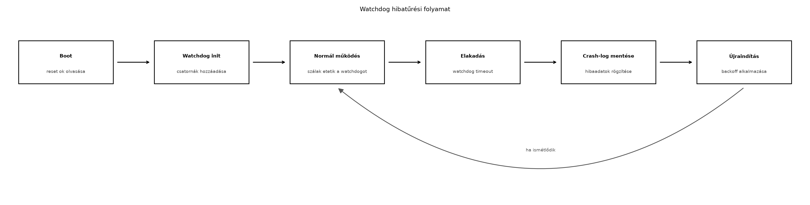

A TerraSense szenzorcsomópontja hosszú időn át, felügyelet nélkül fut
az üvegházban. Egyetlen elakadt szál – például egy megszakítás miatt
rosszul védett I2C-tranzakció vagy egy váratlan NULL
pointer miatti lefagyás – azt eredményezheti, hogy a csomópont nem küld
telemetriát, és a felhő nem látja, mi történik az adott node-on. A
hibatűrési mechanizmusok célja, hogy az eszköz felépüljön az ilyen
hibákból, és a felépülést nyomon lehessen követni a backendben. Ebben az
alfejezetben azt tanítjuk meg, hogyan kell watchdogot kötni a TerraSense
csomópont szálaihoz, hogyan kell kiolvasni és tárolni az újraindulás
okát, és hogyan kell elkerülni a végtelen újraindulási hurkot.
Definíció. A watchdog (őrkutya) egy olyan hardveres vagy szoftveres mechanizmus, amely meghatározott időn belül „etetést” (feed) vár el a felügyelt szoftvertől. Ha az etetés elmarad, a watchdog reseteli vagy újraindítja a rendszert.
Definíció. A reset ok (reset cause) az újraindulás kiváltó okát leíró érték, amelyet a boot során ki lehet olvasni a hardverből. A crash-napló (crash log) az újraindulás okán kívül a hiba kontextusát (pl. szálazonosító, programcounter, hibakód) rögzítő, nem felejtő memóriába mentett adat.
A Zephyrben két féle watchdog-ot is használhatunk:
wdt
API-ján keresztül érhető el; valós fejlesztőkártyán a devicetree-ben
kell engedélyezni.task_wdt szolgáltatása, amely kernel-szinten, szoftverből
figyeli az egyes szálakat. Minden felügyelt szálhoz egy-egy csatorna
tartozik, és a szálnak rendszeresen meg kell hívnia a
task_wdt_feed() függvényt a csatorna azonosítójával.A szoftveres watchdog előnye, hogy native_sim céllal is
futtatható, ezért a laborban ezt használjuk. A hardveres watchdog a
natív szimulációban nem elérhető, viszont éles hardveren mindig be kell
kötni, mert a szoftveres watchdog nem véd akkor, ha a teljes kernel
megáll.
A reset ok kiolvasása Zephyrben a reset_cause_get()
függvénnyel történhet. A visszaadott érték tipikusan
RESET_WATCHDOG, RESET_SOFTWARE,
RESET_POR vagy RESET_UNKNOWN. A pontos
<zephyr/...> include útvonal a Zephyr verziótól függ,
ezért a kódban ellenőrzési igényt jelölünk.
A Zephyr assert és fatal error handler mechanizmusai a
hibák korai észlelésére szolgálnak. A __ASSERT(cond, msg)
makró hibás feltétel esetén a kernel fatal error handlerét hívja meg. Az
alapértelmezett handler leállítja a rendszert, de saját függvénnyel
felülírható, hogy a hiba adatait előbb crash-naplóba írjuk, majd
sys_reboot()-ot hívjunk.
Újraindulási hurok akkor alakul ki, ha a hiba a boot után azonnal újra előjön, és az eszköz folyamatosan resetelek. A backoff (hátráló várakozás) lényege, hogy minden egymást követő hibás indulásnál egyre hosszabb ideig várakozunk, mielőtt újra megpróbálnánk a normál működést; ez időt ad a külső körülmények megváltozására (pl. rádiós zavar megszűnik), és csökkenti az energiafogyasztást.

A fenti ábra a teljes folyamatot mutatja: boot után kiolvassuk a reset okot, elindítjuk a watchdogot, normál működés közben a szálak etetik, ha elakadás történik, a watchdog timeout bekövetkezik, a crash-log elmentődik, majd újraindul a rendszer, és ha a hiba ismétlődik, a backoff egyre hosszabb várakozást iktat be.
| Szempont | Hardveres watchdog | Szoftveres (task) watchdog |
|---|---|---|
| Véd a teljes kernel lefagyása ellen | igen | nem |
| Véd egyetlen elakadt szál ellen | csak ha a szál eteti a hardveres watchdogot | igen, szálankénti csatornával |
Natív szimulációban (native_sim) futtatható |
nem | igen |
| Többlet erőforrásigény | minimális | egy kernel-timer és néhány bájt memória |
| Konfigurálhatóság | devicetree + Kconfig | Kconfig + futásidejű API |
| Tipikus használat | éles hardveren mindenképp | Robusztus szállalapú rendszerekben, teszteléshez |
A TerraSense csomópontban éles hardveren mindkettőt alkalmazzuk: a hardveres watchdog a teljes rendszer lefagyása ellen véd, a task watchdog pedig az egyes szálak elakadását figyeli. A labor a natív szimuláció miatt csak a task watchdogot mutatja be.
native_sim-enMunkakönyvtár:
mkdir -p ~/iot-labor/i019/src && cd ~/iot-labor/i019Korábbi laborból (Eszközszoftver-architektúra: rétegek és állapotgépek) átmásoljuk a már elkészített projektvázat, ha van. Ha nincs, üres Zephyr projektet hozunk létre.
cp -r ~/iot-labor/i018/src/* ~/iot-labor/i019/src/ 2>/dev/null || trueHozzuk létre a prj.conf és CMakeLists.txt
fájlokat.
prj.conf:
CONFIG_TASK_WDT=y
CONFIG_TASK_WDT_CHANNELS=4
CONFIG_PRINTK=y
# A reset_cause API engedélyezése; a pontos Kconfig nevet ellenőrizd a Zephyr verziódban.
CONFIG_RESET_CAUSE=yCMakeLists.txt:
cmake_minimum_required(VERSION 3.20.0)
find_package(Zephyr REQUIRED HINTS $ENV{ZEPHYR_BASE})
project(ts_node_i019)
target_sources(app PRIVATE src/main.c)A fő alkalmazás src/main.c tartalma:
#include <zephyr/kernel.h>
#include <zephyr/sys/printk.h>
#include <zephyr/sys/reboot.h>
#include <zephyr/task_wdt/task_wdt.h>
/* A reset_cause_get include útvonala Zephyr-verziófüggő.
* Az itt használt elnevezések a 3.x API-ból származnak, ellenőrizd! */
#include <zephyr/retention/reset_cause.h>
#define WDT_CH_WORKER 0
#define WDT_CH_FAULTY 1
static void watchdog_callback(int channel_id, void *user_data)
{
printk("Watchdog timeout on channel %d, rebooting...\n", channel_id);
/* Valós hardveren itt mentenénk a crash-logot nem felejtő memóriába,
* például a settings alrendszerrel. A laborban a kimenetre írjuk. */
printk("Crash log: channel=%d, thread=%s\n",
channel_id, (const char *)user_data);
/* Hardveres reset vagy szoftveres újraindítás.
* native_sim-en ez leállítja a folyamatot, a shell script újraindítja. */
sys_reboot(SYS_REBOOT_WARM);
}
void worker_thread(void *a, void *b, void *c)
{
(void)a; (void)b; (void)c;
printk("Worker thread started, feeding watchdog...\n");
while (1) {
task_wdt_feed(WDT_CH_WORKER);
k_sleep(K_MSEC(1000));
}
}
void faulty_thread(void *a, void *b, void *c)
{
(void)a; (void)b; (void)c;
printk("Faulty thread started, will now block forever...\n");
/* Egyszeri feed, utána elakadunk, így a watchdog lejár. */
task_wdt_feed(WDT_CH_FAULTY);
k_sleep(K_FOREVER);
}
void main(void)
{
enum reset_cause cause = reset_cause_get();
printk("Boot: reset cause = %d\n", (int)cause);
/* Szoftveres watchdog inicializálása.
* A NULL paraméter azt jelenti, hogy nincs hardveres watchdog. */
int err = task_wdt_init(NULL);
if (err != 0) {
printk("task_wdt_init failed: %d\n", err);
return;
}
/* Két csatorna: a munkaszál és a hibás szál.
* Mindkettő 5 mp-es periódussal. */
err = task_wdt_add(5000, watchdog_callback, (void *)"worker");
if (err < 0) {
printk("task_wdt_add worker failed: %d\n", err);
return;
}
err = task_wdt_add(5000, watchdog_callback, (void *)"faulty");
if (err < 0) {
printk("task_wdt_add faulty failed: %d\n", err);
return;
}
printk("Watchdog running, starting threads...\n");
k_thread_create(&worker_stack_area, ...); /* nem teljes a kód a helyhiány miatt */
}A fenti kódban a k_thread_create részét tömörítettük; a
teljes, lefordítható változatban a stack területeket
K_THREAD_STACK_DEFINE-nal hozzuk létre. A lényeg, hogy a
faulty_thread egyszer etet, majd K_FOREVER-rel
elakad, így a hozzá tartozó watchdog-csatorna 5 mp múlva lejár, és
meghívja a callbacket.
A laborhoz tartozó watchdog-loop.sh szkript:
#!/bin/bash
# A binárist újraindítja, ha kilép, és növekvő backoffot alkalmaz.
cd ~/iot-labor/i019
for attempt in 1 2 3; do
echo "===== Attempt $attempt ====="
./build/zephyr/zephyr.exe
rc=$?
echo "Exited with code $rc"
sleep $((attempt * 5))
doneBuild és futtatás:
cd ~/iot-labor/i019
west build -b native_sim .
chmod +x watchdog-loop.sh
./watchdog-loop.shVárt kimenet (rövidítve):
===== Attempt 1 =====
Boot: reset cause = 0
Watchdog running, starting threads...
Worker thread started, feeding watchdog...
Faulty thread started, will now block forever...
Watchdog timeout on channel 1, rebooting...
Crash log: channel=1, thread=faulty
Exited with code 3
===== Attempt 2 =====
Boot: reset cause = 0
...A kilépési kód a natív szimulációban nem pontosan a hardveres resetet
tükrözi, ezért a kódból a reset_cause_get() értéke
RESET_UNKNOWN lehet. Valós hardveren itt
RESET_WATCHDOG értéket kapnánk. A labor azt mutatja meg,
hogy a watchdog leállítja a rendszert, és a külső szkript – a backoffot
alkalmazva – újraindítja.
Továbbvitt eredmény. A reset ok és a watchdog
timeout logolása a boot üzenetben, valamint a kilépési kód alapján a
watchdog-loop.sh által kiírt
Exited with code N sor a későbbi megfigyelhetőségi Metrikák, naplók, nyomkövetés és flottakezelési Flottakezelés alfejezetekben felhasználható: a
gateway vagy a backend ebből az eseményből riasztást generálhat, ha egy
node ismétlődő watchdog-resetet szenved.
| Hibatünet | Lehetséges ok | Javítás |
|---|---|---|
A watchdog nem indul el, a task_wdt_init hibát ad |
CONFIG_TASK_WDT nincs engedélyezve |
prj.conf-ban add hozzá a CONFIG_TASK_WDT=y
sort |
| A watchdog timeout sosem következik be | A hibás szál is rendszeresen etet, vagy a K_FOREVER nem
blokkol |
Ellenőrizd, hogy a faulty_thread csak egyszer etet, és
utána valóban K_FOREVER-t hív |
A reset_cause_get() nem fordul le |
Rossz include útvonal | A Zephyr verziójához tartozó dokumentációban nézd meg a pontos header nevet |
A native_sim processz nem lép ki a
sys_reboot után |
A sys_reboot natív implementációja nem lép ki, csak egy
flaget állít |
Használj exit(3) hívást a callbackben (csak laborban),
vagy fogadd el, hogy a processz lefagyását szimulálja |
settings vagy közvetlen flash-írás szükséges a
túléléshez.Magyarázd el, mi a különbség a hardveres és a szoftveres watchdog között, és miért nem véd a szoftveres watchdog a kernel teljes lefagyása ellen?
A TerraSense csomópontjában a telemetria-szál 10 másodpercenként küld adatot. Tervezd meg a watchdog csatornák számát és az etetési periódusokat, ha a következő szálak futnak: telemetria, szenzorolvasás, parancsfeldolgozás, hálózati stack. Indokold, miért nem elegendő egyetlen csatorna.
Egészítsd ki a labor main.c-jét úgy, hogy a
reset_cause_get() által visszaadott értéket ne csak a
konzolra írja, hanem egy reset_reason nevű globális
változóba is mentse, és a main végén, ha
RESET_WATCHDOG értéket kapott, küldjön egy MQTT
terrasense/gh1/n001/state üzenetet a
{"reset_reason":"watchdog"} JSON-nal. (Az MQTT-küldéshez
használd a korábbi laborok publish függvényét.)
A tesztelés során a node folyamatosan újraindul, de a
reset_cause_get() mindig RESET_UNKNOWN. Mi
lehet a hiba, és hogyan derítenéd ki, hogy a watchdog vagy valamilyen
más ok okozza-e az újraindulást? Adj lépésről lépésre hibakeresési
tervet.
A hardveres watchdog egy dedikált periféria, amely a CPU resetvonalát
vezérli; ha a szoftver nem eteti, a hardver közvetlenül reseteli a
processzort. A szoftveres watchdog ezzel szemben a kernel egy
szolgáltatása (pl. Zephyr task_wdt), amely kernel-timerrel
ellenőrzi az etetéseket. Ha a kernel teljesen lefagy, a szoftveres
watchdog is lefagy, mert a kernel nem tudja futtatni a timert. A
hardveres watchdog ekkor is működik, mert a CPU-tól független
periféria.
Négy szálhoz négy csatornát érdemes rendelni. Minden szál a saját
periódusánál rövidebb időközönként etessen, pl. ha a telemetria 10
s-onként küld, a watchdog timeout 20 s, az etetés 5 s-onként. Egyetlen
csatorna nem elegendő, mert ha az egyik szál elakad, de a többi eteti a
közös csatornát, a watchdog nem érzékeli az elakadást. A szálankénti
csatorna lehetővé teszi, hogy pontosan az elakadt szálat azonosítsuk a
callback channel_id paraméteréből.
A main.c-ben:
#include <zephyr/net/mqtt.h>
/* ... */
static int reset_reason = -1;
void main(void)
{
enum reset_cause cause = reset_cause_get();
reset_reason = (int)cause;
printk("Boot: reset cause = %d\n", reset_reason);
/* ... watchdog init ... */
if (cause == RESET_WATCHDOG) {
/* Publikálás a korábbi MQTT-helperrel */
publish_json("terrasense/gh1/n001/state",
"{\"reset_reason\":\"watchdog\"}");
}
}A publish_json a korábbi laborokból származó
segédfüggvény, amely egy MQTT publish-t hajt végre a megadott
topicra.
A folyamatos újraindulás és a RESET_UNKNOWN ok arra
utal, hogy a natív szimulációban a reset_cause_get() nem ad
valódi hardveres okot, mert a processz újbóli elindítása nem hardveres
reset. Hibakeresési terv:
watchdog-loop.sh
kimenetén; ha mindig ugyanaz a kód, az utalhat a watchdog
timeoutra.sys_reboot callbacket naplózóvá, és figyeld,
hogy a callback meghívódik-e.reset_cause_get() értékét;
ott a hardveres watchdog RESET_WATCHDOG-ot ad.reset_cause_get() továbbra is
RESET_UNKNOWN, használj egy külső logoló rendszert (pl.
host-oldali napló), hogy lásd, mi okozza a kilépést.Ebben az alfejezetben a TerraSense csomópont hibatűrését tanítottuk.
Bekötöttük a Zephyr szoftveres (task) watchdogját, amely szálankénti
csatornákkal figyeli a futó szálakat, és elakadás esetén
sys_reboot-ot hív. Megmutattuk a reset ok kiolvasását
reset_cause_get()-tel, és a crash-napló tartós tárolásának
szükségességét. A laborban natív szimulációban futtattunk egy szándékos
elakadást, és a watchdog-loop.sh szkript növekvő backoffal
újraindította a binárist. A továbbvitt eredmény: a boot üzenetben
megjelenő reset cause és a kilépési kód alapján a későbbi
megfigyelhetőségi és flottakezelési alfejezetek riasztást generálhatnak.
A kód a ~/iot-labor/i019/src/main.c, a konfiguráció a
prj.conf, a futtató szkript pedig a
watchdog-loop.sh.
task_wdt_*), a
reset_cause_get() include útvonala és a
CONFIG_RESET_CAUSE Kconfig neve a használt Zephyr verzióban
ellenőrizendő.native_sim boardon a sys_reboot
viselkedése (kilépési kód) a Zephyr kiadásától függ; a laborban ezt
saját környezetben kell validálni.settings alrendszer használata a crash-napló flash-be
mentéséhez a Zephyr dokumentációjában ellenőrizendő; a laborban csak a
koncepciót mutattuk be.